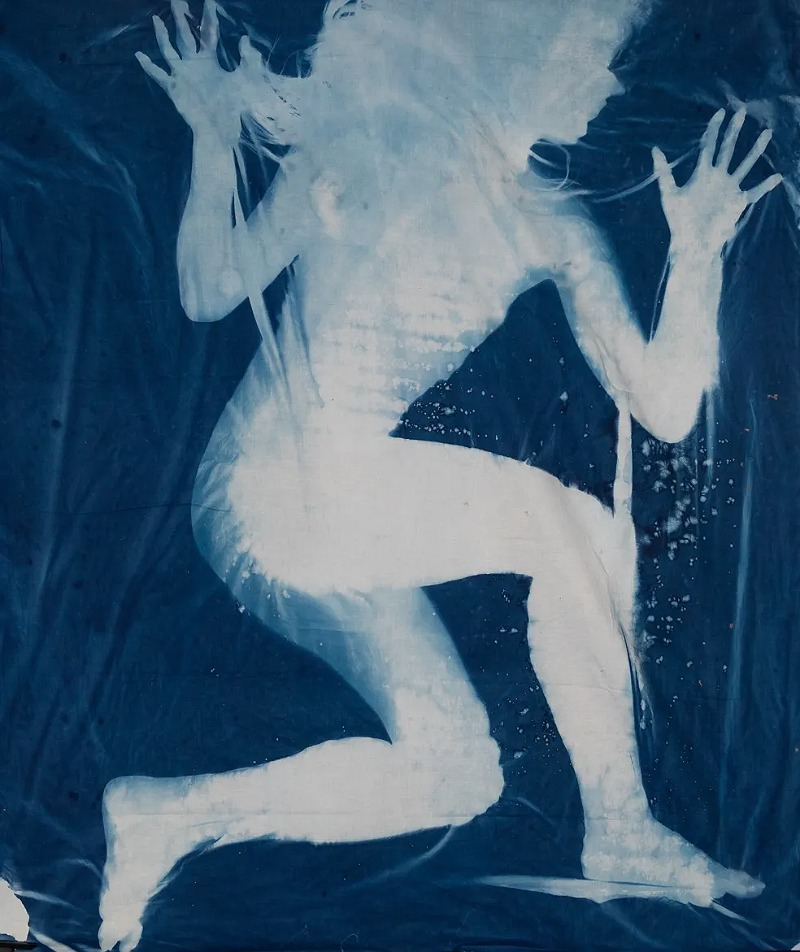
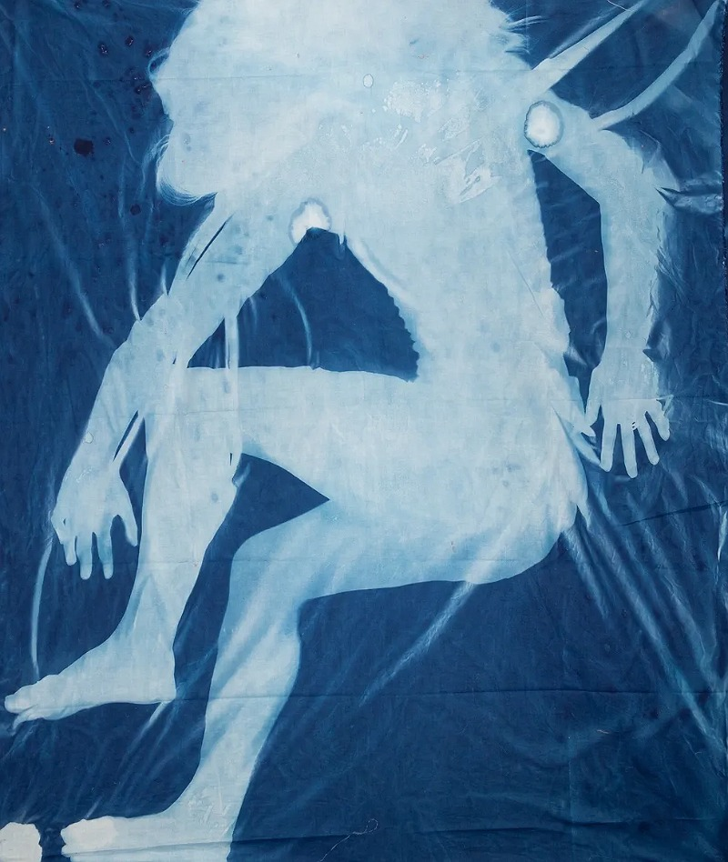
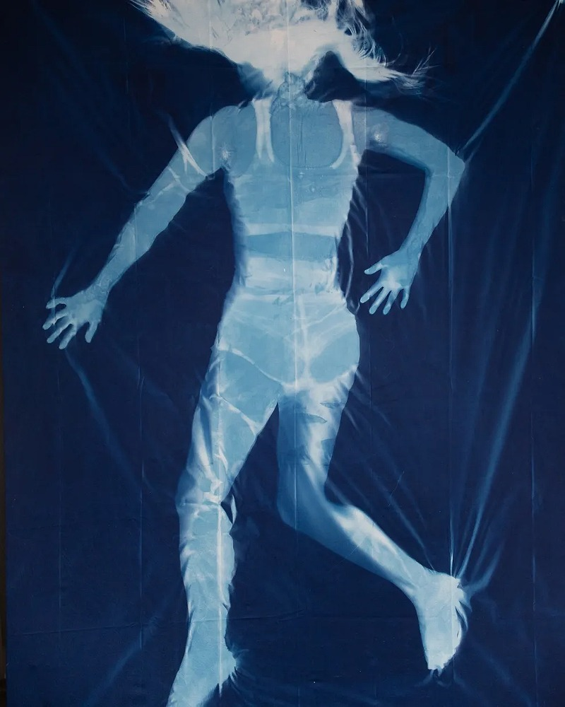

Cyanotypes are a form of alternative photography, that involve treating
fabric/paper with a chemical mixture of ammonium and potassium. When exposed
to UV light, the chemicals bind and produce a brilliant and distinctive
Prussian blue. The process for producing these prints is Victorian (1842)
and creates highly recognisable colours and quality. A film negative, physical
object, or stencil laid on top of the treated material, blocking the UV light and
stopping the chemical processing that makes the blue colour.
The piece is washed in cool water, and any of the chemical that has not
been exposed to the sun will wash out. Thus, the areas covered remain white, and
the uncovered areas become blue. I have used cyanotypes in a variety of projects
over the past few years, and my handle on controlling them has become pretty solid.
They are quick, with processing times as short as 15 minutes, easy, and they
come out looking beautiful.
click here to learn more



make space!